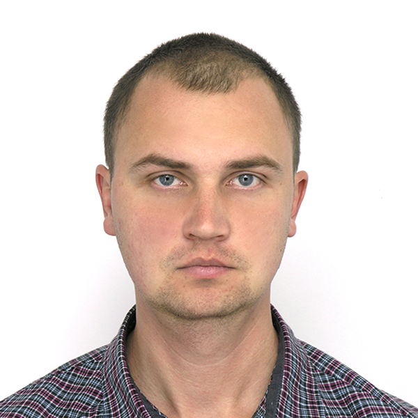

Kravtsiv Yurii
I can work well as part of a team or individually. I am initiative because I approach the question or particular case from a creative viewpoint.
I am seeking for a job of a junior web-programmer
geophysics, geophysical research and prospecting methods.
April/2014 – December/2017 | geophysical engineer, operator of gravimeter
NTK DEPROIL | Ivano-Frankivsk region.
March/2008 – April/2014 | geophysical engineer, operator of gas logging
Ivano-Franklvsk expedition of geophysical research in boreholes | Ivano-Frankivsk region.
April/2007 – March/2008 | operator of seismic station
West Ukrainian Geophysical prospecting expedition | field trial research.
August/2006 – April/2007 | geophysicist
The Crimean geophysical organization | the Crimea.